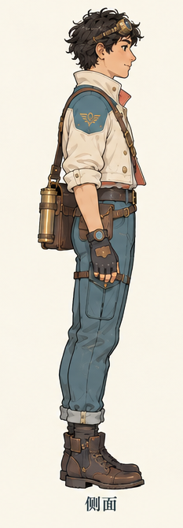
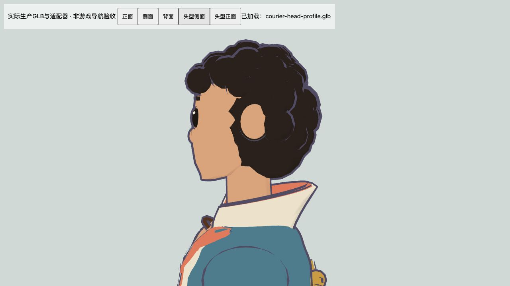
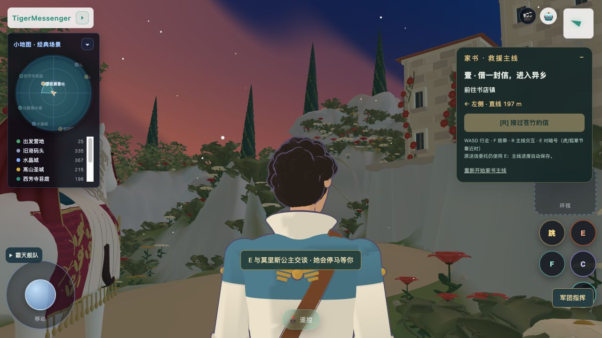
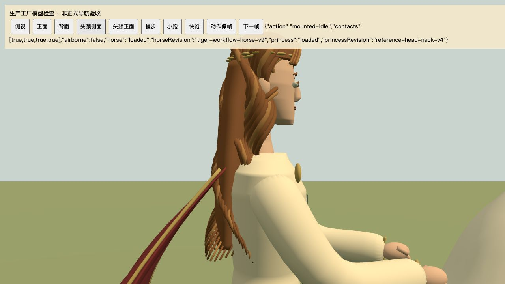
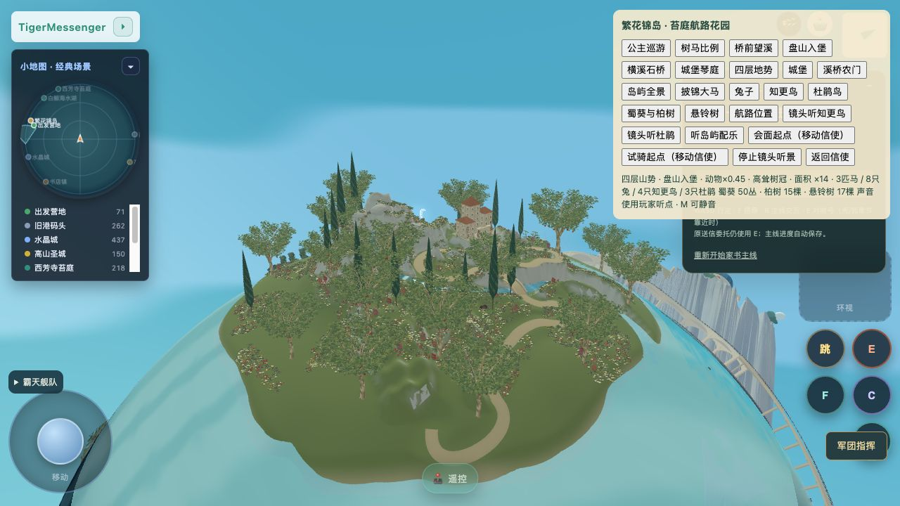

已接正常游戏入口。保留原模型和动作关节；这是实作结果与参考对照，整体造型仍需继续精修。
信使真实GLB：侧面、正面及头型近景 · 公主真实GLB：头颈及骑乘 · 正式游戏



正常入口H特写：信使新头型与无镜显示，点击岛屿地面未弹城堡编辑器。

v4：下脸收短、下颌收窄、颈部收细并缩短露颈。实际GLB组件画面；头发、面部和衣物整体仍与目标有差距。采用原Blender连续曲面和关节流程，未使用图生GLB。

实际正常场景：中上段重新回弯，路线247.10m。当前版本完整来回骑乘与列车包络未验收。